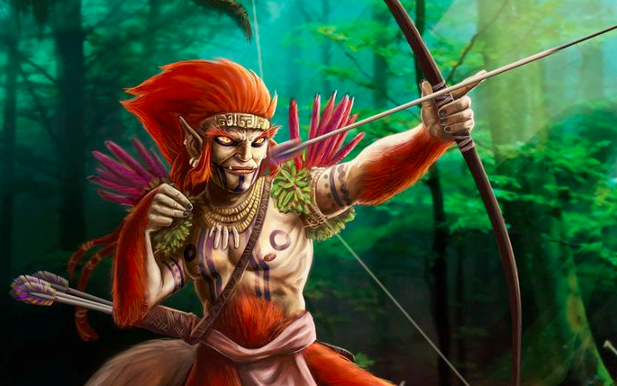

Curupira é um ser mítico do folclore brasileiro conhecido por ser o guardião da floresta e por punir aqueles que entram nela para derrubar árvores ou caçar os animais. O curupira é personagem de uma lenda que se originou na cultura indígena brasileira e acabou espalhando-se por todo o país. Foi uma das primeiras lendas indígenas registradas pelos portugueses.
O curupira é um ser da floresta e atua como seu guardião contra todos aqueles que procuram destruí-la. Suas características físicas são bastante conhecidas, a lenda diz que o curupira é pequeno (alguns chamam-no de “anão”), tem os cabelos vermelhos como fogo, e seus pés são posicionados ao contrário, com os calcanhares para frente.
Alguns falam que o curupira tem o corpo, dentes ou olhos verdes, outros, que ele é careca, e alguns acreditam que ele é peludo. Independente da versão, todos acreditam em sua força física sobrenatural, apesar de ser muito pequeno.
O curupira cumpre o papel de guardião das florestas e pune aqueles que vão fazer mal a elas. No entanto, ele só pune aqueles que vão para floresta destruí-la por prazer, assim, os que caçam ou derrubam árvores para garantir sua própria sobrevivência não são punidos por ele.
A lenda do curupira aterrorizava os indígenas, e os relatos realizados por cronistas portugueses de séculos passados demonstram isso. Os indígenas consideravam que cadáveres que fossem encontrados na floresta eram de pessoas que tinham sido alvo do curupira, porque ele poderia matar aqueles que a prejudicavam.
Para ficar mais claro, é importante ressaltar que os sátiros da mitologia grega são seres da natureza que tem metade do corpo em forma humana e a outra metade em forma de bode, sendo, então, popularmente citados como as criaturas metade homem, metade bode. Esses seres são equivalentes aos faunos, da mitologia romana.
Sendo assim, vamos conhecer um pouco mais de cada uma dessas figuras da mitologia grega e entenda melhor sobre cada um deles.
urupira gosta de pregar peças nos caçadores que entram na floresta. Ele pode disfarçar-se de caça e, assim, atrair a atenção do caçador, que inicia uma perseguição à sua suposta presa e, então, perde-se no meio da floresta. Ele também pode atormentar os caçadores com um assovio ensurdecedor. As vítimas do curupira ficam atordoadas pelo som e por não saber de onde e quem está emitindo-o. Reza a lenda que, caso encontre o curupira na floresta, você pode escapar dele fazendo um nó em um pedaço de cipó.
Qual é a origem do curupira

O curupira é protagonista de uma lenda surgida entre os povos indígenas, mas é impossível precisar quem a criou e quando surgiu. O que sabemos é que essa história é uma das mais antigas do nosso folclore. Para fins de comparação, a lenda do saci surgiu no final do século XVIII, enquanto a lenda do curupira já era conhecida dos portugueses no século XVI.
O primeiro a citá-la foi um padre jesuíta chamado José de Anchieta, quando estava estabelecido em São Vicente, em 1560. Em seu relato, ele falou de um “certo demônio” que os indígenas chamavam de curupira e que castigava com frequência aqueles que entravam no mato, e alguns desses chegavam a ser mortos.
A herança indígena na lenda do curupira começa pelo próprio nome desse ser, já que o termo vem do tupi. A tradução desse nome, porém, é alvo de polêmica, uma vez que diferentes estudiosos chegaram a diferentes conclusões a respeito do seu significado. A teoria mais aceita é a de que o termo significa corpo de menino, em referência ao fato do curupira ter corpo semelhante ao de uma criança.
Outros relatos sobre o curupira foram realizados por portugueses nos séculos XVI, XVII e XVIII, o que reforça o fato de que essa lenda era difundida de Norte a Sul do território brasileiro. Na medida em que essa se espalhou, foi sendo conhecida por outros nomes e ficou associada com outras figuras do nosso folclore.
Existem lendas parecidas com a do curupira em outras culturas da América do Sul, e uma delas é a do chudiachaque, presente na cultura inca, e a do máguare, presente no folclore venezuelano. Existem folcloristas que afirmam que a lenda do curupira surgiu nos nauas, povo indígena do Norte do Brasil, e foi espalhando-se, até chegar aos tupis e aos guaranis.
Falando em guaranis, localizados na porção centro-meridional brasileira, bem como em países como a Bolívia e o Paraguai, é de conhecimento dos estudiosos que a lenda do curupira existe nesse último país, só que sendo conhecida com outro nome: curupi. Lá, o curupira ainda é o guardião da floresta, mas acaba ganhando um apelo sexual, que, no Brasil, só foi encontrado em alguns povos indígenas da região Norte.